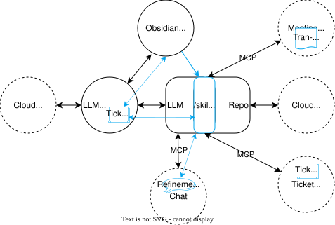
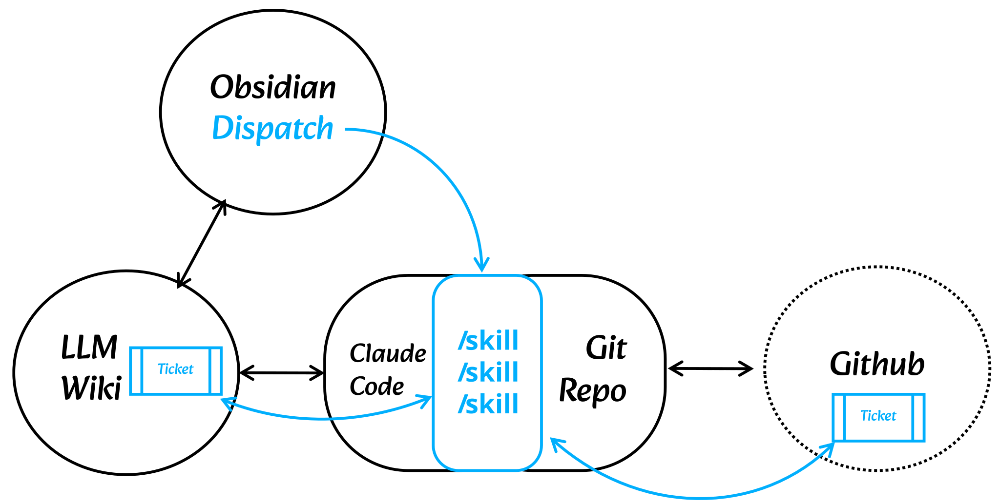
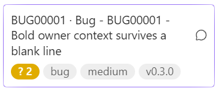
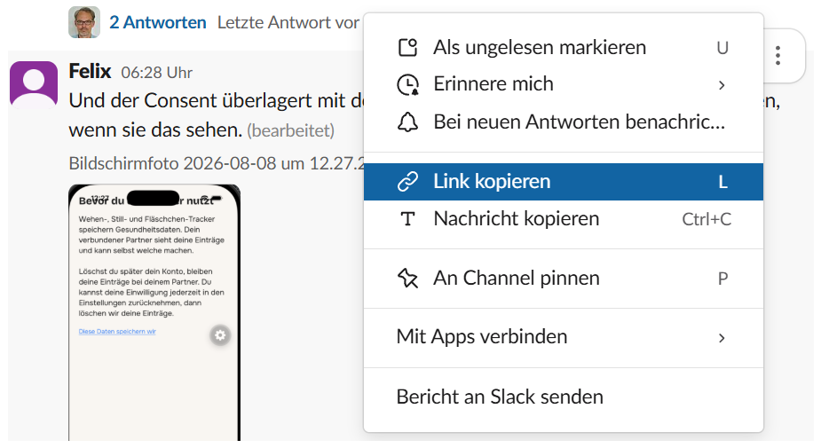

Dispatch 101
How Dispatch connects an Obsidian LLM Wiki, your repo and Claude Code or Codex: the setup, and the skills that carry a ticket from refinement to release.
Overview#
The optimal setup for Dispatch is shown below. Your LLM, such as Claude Code or Codex, is connected to your repository, which contains a set of skills. The LLM Wiki is symlinked to your repository, enabling the LLM to easily access it via a defined path. Typically, your AGENTS.md or CLAUDE.md will mention the most important files in your Wiki using this path.
You can read and write these files using Obsidian and your IDE. You can also start the LLM skills directly from your Obsidian Kanban board.

The LLM Wiki is connected to your co-workers via your cloud storage. You can use Google Drive, iCloud, GitHub or Obsidian Sync. If you have users working with Windows, I wouldn't recommend using iCloud because it constantly duplicates your Markdown files in order to resolve concurrent writes.
The next step is to connect your communication platforms for chatting, ticketing and meetings. The chat is very valuable during refinement, because the LLM can ask your stakeholders the most important open questions right where the team already talks. Importing meeting transcripts created by agentic notetakers, such as Google Gemini, also saves a lot of time. The /meeting skill turns a transcript into a meeting report, cross-references it with the relevant ticket IDs and folds the decisions into those tickets — which also resolves open questions on tickets still in refinement. You can drop the transcript into your wiki yourself, or configure an automated import. Your ticketing system can be connected via MCP or a CLI such as gh; the skills then read its comments and keep the tickets up to date. All of these integrations are optional: without a chat you answer the agent directly, and without a tracker the ticket notes in your wiki are your ticketing system.
Solo Mode#
The minimal setup looks similar to this. This is basically how I develop Dispatch myself. I use the gh-CLI to synchronise the tickets with GitHub Issues, but this is optional.

Setup your Repo#
The entire Dispatch setup resides in a single dispatch/ folder in your repository. Most importantly, it contains a symbolic link to your wiki folder, which is synchronized by your cloud storage service and therefore Git-ignored.
The scripts and your skills live in the scripts/ and workflow/ folders. Each workflow exists exactly once, and every coding agent reads it through a small stub in its own format: .claude/commands/ for Claude Code and .codex/skills/ for Codex. Claude Code invokes /refine US00042, Codex invokes $refine US00042; the examples below use the Claude prefix. If you only use one coding agent, you only need its stubs — but it makes sense to use a different model for the code review than for development. Also, the pricing of the most advanced frontier models changes regularly or you may exceed your usage limits, making a quick change of coding agent very convenient.
dispatch/
wiki/ the git-ignored symlink to the vault
scripts/ move-ticket, run-state, meet-fetch
workflow/ one canonical file per workflow
invariants.md shared project invariants (Dispatch's AGENTS.md or CLAUDE.md)
settings.yaml project-level settings
.claude/commands/ Claude's skills pointing to dispatch/workflow/
.codex/skills/ same thing for Codex
Your ticket templates and your ADRs (Architecture Decision Records) live in the wiki. The ADRs are the most important implementation guidelines for your LLM, and the templates contain the workflow-relevant structure and instructions as Markdown comments.
Ticket Workflow and Skills#
Dispatch follows the typical workflow and conventions of agile teams and speeds up the process with skills which automate the clerical tasks like refinements, reviews, meetings and more. The typical Kanban board in Dispatch has the following columns: Backlog, Refinement, In progress, Review, Done and Released.

Diagram description
A ticket starts in Backlog and moves to Refinement, then In progress, then Review. A failed review sends it back to In progress; a successful one moves it to Done. The /release skill moves it from Done to Released.
The skills facilitating this workflow are /create-ticket, /refine, /update-ticket, /implementation-plan, /develop, /code-review, /test-plan and /release. The benefit of this classic set is that we all know and understand this workflow, which reduces friction and misunderstandings.
Refinement Workflow#
The refinement process usually begins by invoking the /refine skill on a ticket, for example, /refine US00042. The LLM will then read through the ticket and any referenced files and add any missing sections from your ticket template.

Most importantly, it updates the Open Questions section and writes the number of questions your team has to answer to the frontmatter property open_questions. This number appears on your ticket card as an orange badge. If you have connected a chat, the /refine skill will also post a brief summary there, enabling your team to answer these questions in the discussion thread of this post. The URL of this discussion thread is added to the ticket's frontmatter in the discussion property.
You will then call /update-ticket US00042 from time to time to update your ticket until all questions are resolved. If you have a ticket system connected, the skill will also consider the comments in the ticket. Another simple way to answer these questions is to add inline comments to the ticket's Markdown. Simply add a > Kai: This is my thoughtful comment to each question, then run /update-ticket to merge your answers into the correct place in the ticket.

Diagram description
/refine starts refinement and hands over to /update-ticket. While open_questions is greater than zero, /update-ticket runs again; once it reaches zero, refinement ends.
The Development Process#
This process is not as simple as the refinement, of course, and I consider it a starting point, not a method you have to follow thoroughly. It is aligned as closely as possible to the traditional development cycle, and at each stage it produces an artefact that you can review. You can also skip the whole process and just vibe-code the ticket, but you might miss out on some important steps that would help you in the long-term development process. These steps are: recording Architecture Decision Records (ADRs), an independent code review, and writing a test plan to hand over to the test team.

Diagram description
/implementation-plan leads to /develop, which leads to /code-review. Open findings send the ticket back to /develop; with none, /test-plan follows. A failed manual test sends the ticket back to /develop; otherwise the process ends.
The only step which is not common in old-school programming is the /implementation-plan, but all the coding agents have this built in and we should do it too. This is actually the step where the developer's technical background is most needed. Once the plan is signed off, the skill extracts the durable decisions from it and records them as ADRs.
/develop implements the ticket and runs your project's checks, assuming you have set up an elaborate suite of unit, integration and end-to-end tests. A good testing suite will save you the most time in the whole process.
Run /code-review in a fresh session, ideally with a different model. It adds all findings to the Code review section and updates the open_findings counter, which appears as a red badge on your ticket card. If it finds anything, you should go straight back to /develop to fix it. A clean review is the precondition for /test-plan.
Handover for testing#
Even if you are doing the testing yourself, the /test-plan skill is not optional. This is because it contains the logic for the handover from the development team to the rest of the team. These are:
- listing manual tests for the test team or stakeholders — only what automation can't cover.
- applying the freeze rule to tickets so they cannot be changed later in the project. I added this rule when I recognised that the LLM was updating outdated logic in the ticket, but tickets should be recognised as historical artefacts after implementation.
- moving the ticket to Review.
After running /test-plan and adding the tests to the Test Plan section, the ticket will have an open_tests counter and a purple badge on the ticket card.
Fix Bug Shortcut#
This rather elaborate workflow is good for larger tickets, but not for smaller bugs, which show up as a post on Slack or elsewhere. However, if you skip the entire workflow, your bug fix might not appear in the next release notes, and the LLM might overlook the fact that it has already been fixed if someone else reports the same bug.

For this, the setup skill installs a /fix-bug skill. It takes a URL or other reference as a parameter, creates a bug ticket, fixes the bug, and moves the ticket to Done, all in one go. If the fix turns out to be bigger than it looked, it stops and leaves the bug ticket for the full workflow.
Conclusion#
You can install Dispatch just by clicking on Add to Obsidian on the Plugin Directory page, but this is only half the story. You have to set up your Wiki, change the settings of the plugin and set up the dispatch/ folder. This is quite a tedious task, but thankfully we have a plugin skill called /dispatch-setup for that. The skill will scan your repo and your Wiki (if you already have one) and guide you through the setup. It will also do the whole configuration of Dispatch for you.
Claude Code:
/plugin marketplace add kaimys/obsidian-dispatch
/plugin install dispatch-setup
Codex:
codex plugin marketplace add kaimys/obsidian-dispatch
codex plugin add dispatch-setup@dispatch
If you made it this far and had some problems, or if you just have questions or feedback, I would be very happy if you share them on GitHub discussions. I try to respond in a timely manner. Happy prompting!
Glossary#
ADR#
An Architecture Decision Record (ADR) is a short document that captures and explains a single decision relevant to a product or ecosystem. martinfowler.com/bliki/ArchitectureDecisionRecord.html
Frontmatter#
Frontmatter is a set of metadata added to the top of a Markdown page in the YAML format, like in the example below. Obsidian makes the Wiki pages searchable by these frontmatter properties, and the Dispatch workflow relies heavily on frontmatter.
---
title: Dispatch 101
author:
- Kai Mysliwiec
- DeepL Write
source_of_truth: true
---